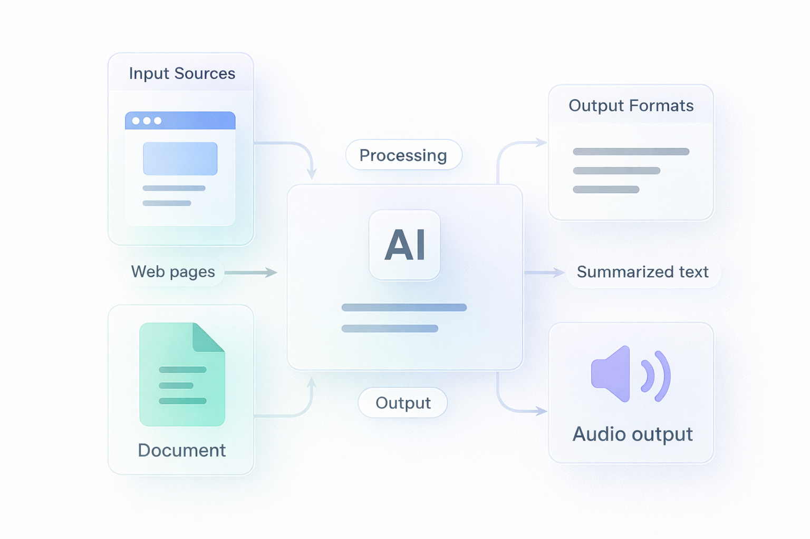

Web Scraping
Cheerio-based extraction keeps the input flow quick for articles, blogs, and public pages.
Content Intelligence Hub helps you capture web content or documents, reduce it with AI, and stream it back as listenable audio without switching tools.

The experience stays lightweight while the backend handles scraping, storage, AI summarization, chunking, retries, and audio streaming.
Cheerio-based extraction keeps the input flow quick for articles, blogs, and public pages.
Gemini-generated summaries turn long-form content into smaller, easier-to-review outputs.
Stream audio progressively and keep a clear path to saving the result for later access.